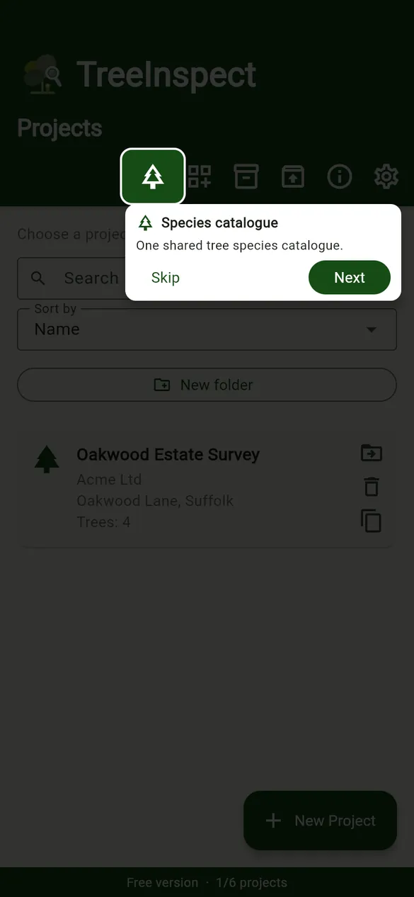
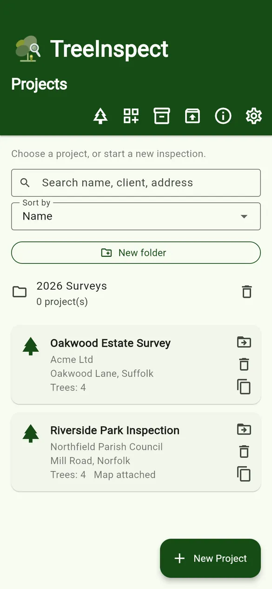
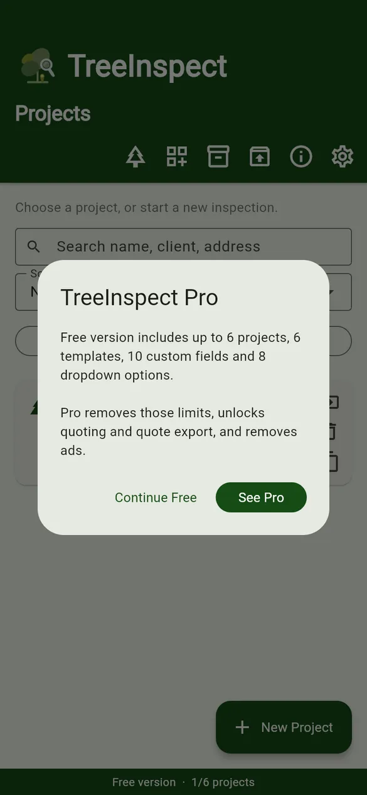
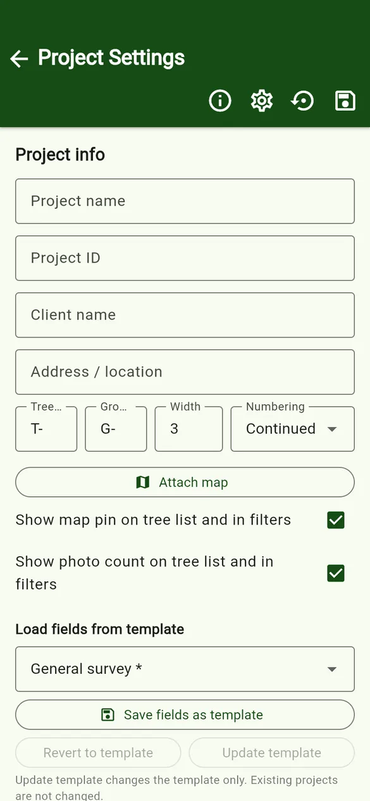
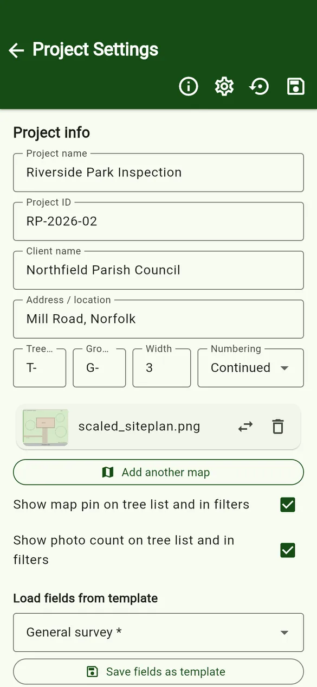
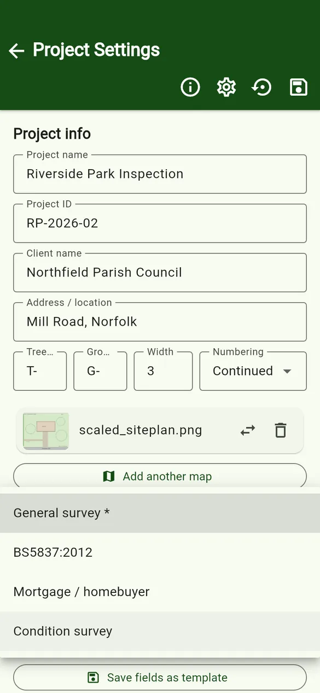
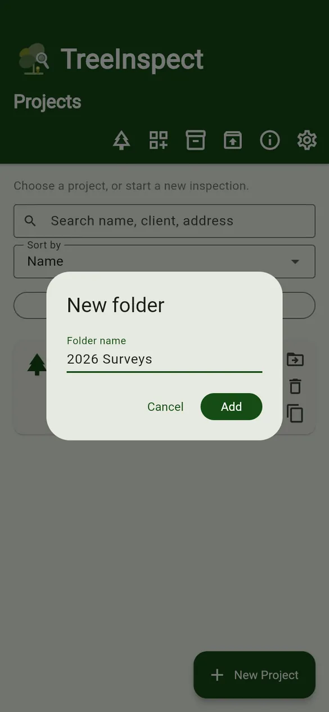
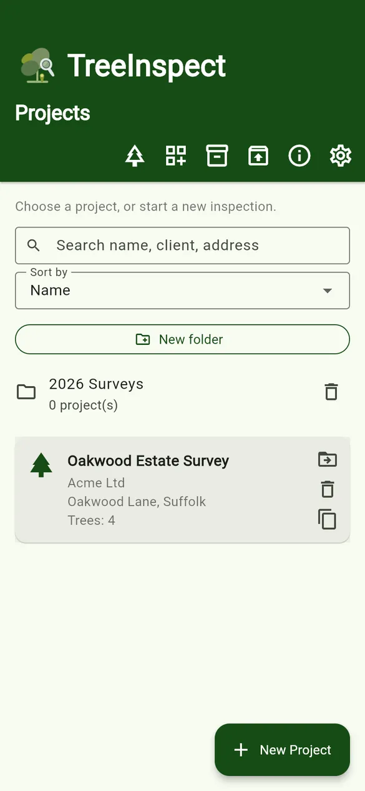

User guides › Projects and folders
Projects and folders
Create projects, organise them in folders, duplicate, delete and sort.
The Projects screen is the first screen you see. Each project is one survey job, with its own client details, site map, data fields, trees, photos and quotes.



The toolbar
| Button | What it does |
|---|---|
| Species catalogue | Opens the shared list of species used by every project. See Species catalogue. |
| Project templates | Saved field layouts, export settings and SOR structures. Star a template to make it the default for new projects. See Templates and fields. |
| Archives | Projects you have archived, ready to restore. |
| Import backup | Restore a project from a zip backup, or (PRO) create a project from a spreadsheet. See Import, export and backups. |
| Quick guide (ⓘ) | Appears on every screen. Shows what each button on that screen does. |
| App options (⚙) | Pro status, photo options, defaults for new projects and, where needed, ad privacy choices. |
Create a project
- Tap + New Project. The new project starts from your default project template.
- Fill in Project name, Project ID, Client name and Address / location.
- Check the ID format (tree prefix, group prefix, width and numbering). See ID numbering.
- Optionally tap Attach map to add a site plan so you can pin trees. See Map and pins.
- Optionally choose another template under Load fields from template.
- Tap Save project (the save icon at the top).



Folders
- Tap New folder, type a name and tap Add.
- Use the Move to folder icon on a project card to file it. Open a folder to see its projects.
- The bin icon on a folder deletes the folder.


Sort, duplicate and delete
- Sort by changes the order of the project list.
- Search finds a project by name, client or address.
- Duplicate project makes a copy, which is useful when you survey the same site again.
- Delete project removes the project and its data from the phone. Export or archive it first if you may need it again.
Free version: up to 6 projects. Pro has no project limit. See Pro and Free limits.